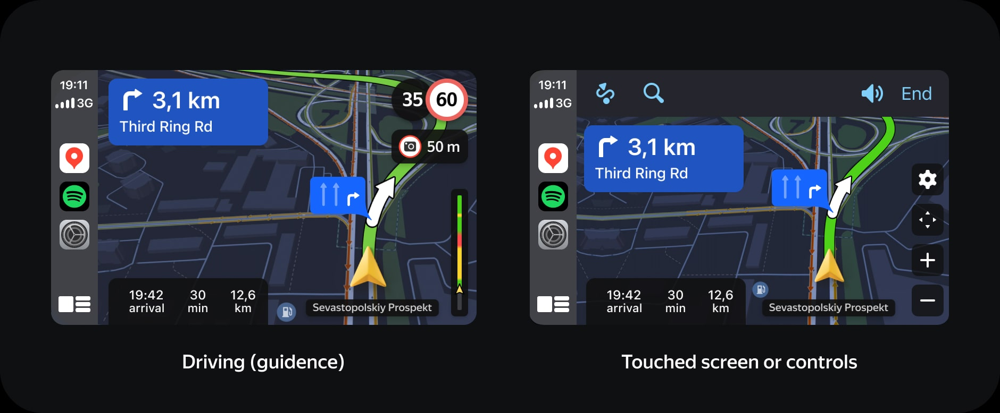
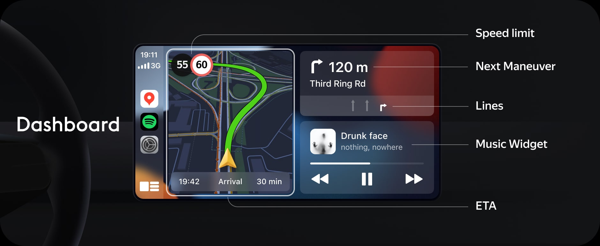

CarPlay and Android Auto are becoming increasingly popular, and most new cars support them. As a leading geo-application, Yandex is committed to staying at the forefront of innovation.
Supporting CarPlay and Android Auto has been one of the most requested features by our users. By integrating these platforms, we aim to enhance the user experience and maintain our competitive edge in the market.

The key challenge was to create two apps (Maps and Navigator) on two platforms. As a result, our apps are at the top of stores, and we published 4 apps in 1 day.
I started with analytics and guides. New applications and young platforms are usually a problem.
Also, if you're building something for cars, you need the right environment for testing first mockups.

The next step was the app architecture. The prototype showing starting screen and the freedrive mode.
When the user starts moving, we hide the top bar and controls, which you can easily bring back if you touch the display or use the controls.

The same on the driving screen:
The key feature of CarPlay for us was the Dashboard. When you get into your car, you will immediately see Yandex Maps, it will start automatically.
Driving mode:

You can use your voice for searching places. After that, we show a map with the result on which you can select.

Then once you have chosen a location we are ready to see the directions and start driving.

Here you can see lane hints on the map, speed limits with camera alerts, the ETA overview that shows all your route status.

We use contextual lane hints on the route from the mobile app, but we've simplified it and only show lanes without additional information.

A lot of testing and release.

As a result, our apps are at the top of stores, and we published 4 apps in 1 day.